El cantón Mocache está ubicado en la provincia de Los Ríos, Ecuador. Su nombre proviene del vocablo indígena "Mukachi", que significa bosque alto, hermoso y bien oliente. Fue cantonizado el 28 de mayo de 1996. Se caracteriza por su riqueza agrícola, especialmente por la producción de cacao, banano, arroz y maíz. Además, conserva las tradiciones y costumbres de la cultura montubia.
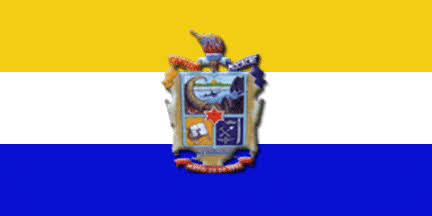
El cantón Mocache, ubicado en la provincia de Los Ríos, tiene como cabecera cantonal a Mocache. Según el clasificador geográfico del INEC, no registra parroquias rurales ni otras parroquias urbanas independientes.
Mocache.Es atractivo por su riqueza natural. Tiene aproximadamente 17 hectáreas y alberga especies de animales como guatusas, aves y monos, además de una gran variedad de plantas.
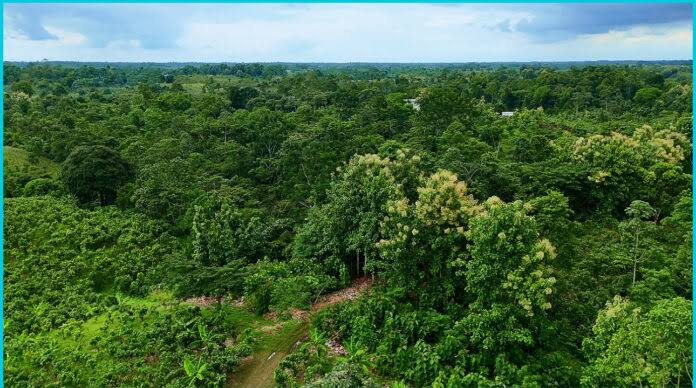
Está ubicado en la cooperativa 23 de Agosto. Es visitado por su vegetación y diversidad de flora y fauna, ideal para disfrutar de la naturaleza.
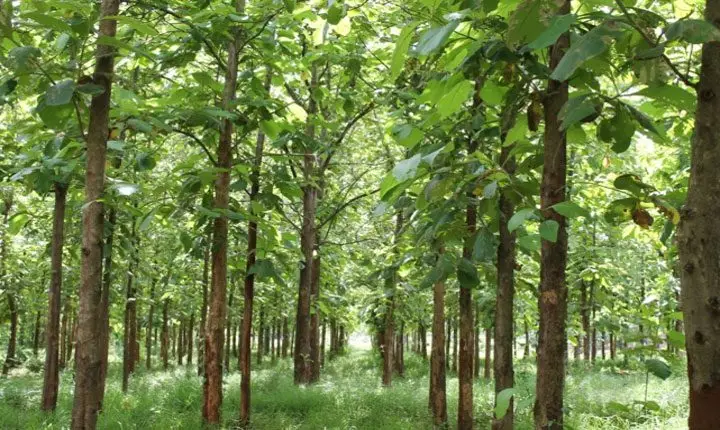
Atraviesa la ciudad y ofrece paisajes naturales. Es utilizado para actividades recreativas y competencias deportivas.
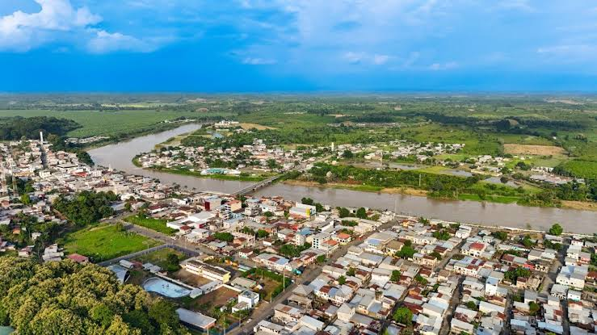
Es uno de los lugares visitados por los turistas que buscan disfrutar de los paisajes naturales y de los atractivos del entorno rural de Mocache.
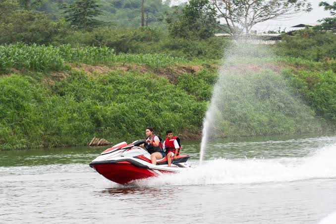
Es un espacio turístico y recreativo junto al río Mocache. Es visitado para caminar, descansar y disfrutar del paisaje y de las actividades culturales.
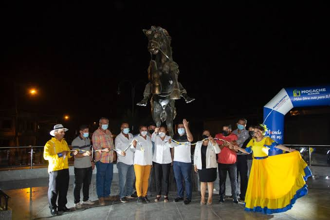
Son lugares importantes porque representan la identidad religiosa y cultural de Mocache. El parque permite descansar y compartir, mientras que la iglesia es dedicada a la patrona del cantón.
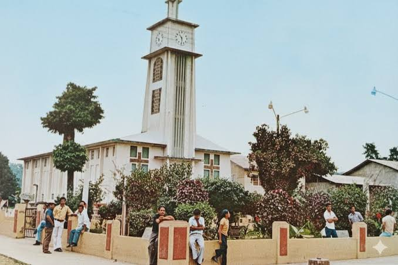
Es un atractivo de turismo rural donde los visitantes pueden conocer el entorno agrícola y disfrutar de las actividades relacionadas con el campo.
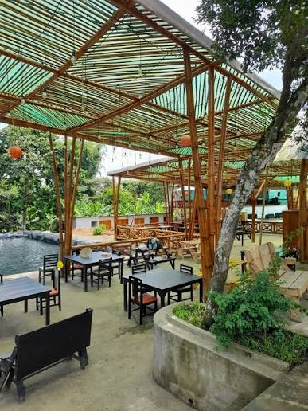
Son visitadas porque ofrecen piscinas, canchas deportivas, restaurantes, paseos a caballo y espacios recreativos rodeados de naturaleza.
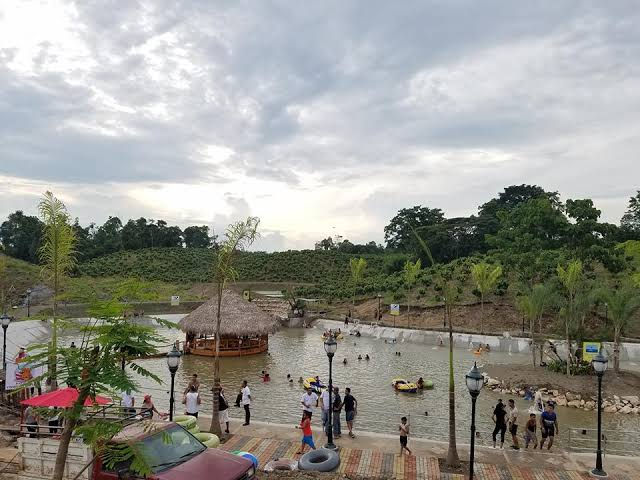
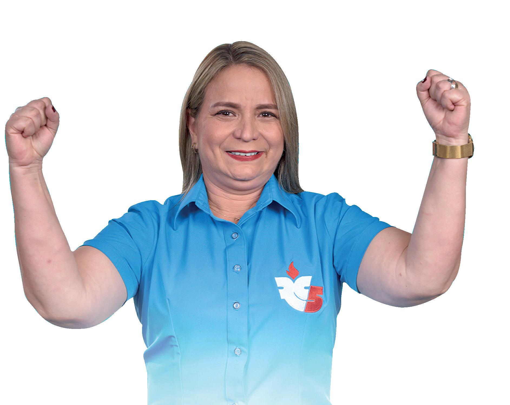
La actual alcaldesa del cantón Mocache es la abogada Yenny Domínguez Saltos, quien ejerce sus funciones durante el período 2023-2027. Está encargada de dirigir la administración municipal y promover obras y proyectos para el desarrollo y bienestar de sus habitantes.
Según el Censo de Población y Vivienda de 2022 del INEC, el cantón Mocache cuenta con 42.026 habitantes.
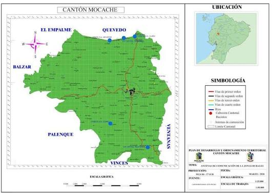
Volver al índice principal